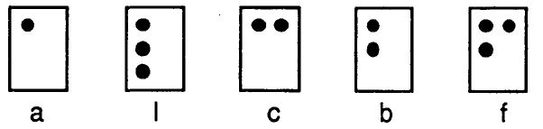
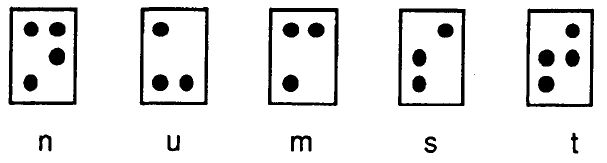

| Introducción al entrenador Braille «Nela» |
| Introducción al entrenador Braille «Nela» |
En general es recomendable que, antes de empezar a usar Nela, el niño haya alcanzado cierta madurez lecto-escritora: conceptos espaciales básicos (arriba/abajo, izquierda/derecha), nociones de cantidad (primeros números), coordinación dígito-manual, etc. Con este fin se puede usar el Método Alameda.
Nela se basa principalmente en el método presentado en el libro El Braille en la escuela. Una guía práctica para la enseñanza del Braille.
Aunque por omisión Nela siga este método (que se expone brevemente a continuación), no lo impone, y el docente que lo desee puede fácilmente personalizar el programa para seguir otra metodología.
En la enseñanza de la lectoescritura Braille, debería evitar una presentación ordenada de las letras del alfabeto, tal y como aparece en los métodos alfabéticos en tinta. Es muy importante no enseñar simultáneamente, desde un principio, letras muy parecidas, para evitar posibles confusiones que dificultarían el proceso de enseñanza, y que en muchas ocasiones son difíciles de corregir si se han adquirido.
En una primera etapa del aprendizaje, el niño deberá conocer un conjunto de palabras que contengan letras de estructura espacial simple. Tal es el caso de las letras que llevan puntos en una misma dirección o en los extremos:

Cuando el niño sea capaz de reconocer este tipo de letras, le será mucho más fácil aprender las que distribuyen sus puntos de forma discontinua, dejando huecos entre las filas del cajetín:

Las semejanzas entre algunos sonidos y la diferente forma que tienen de escribirse es otro de los aspectos importantes a tener en cuenta, al igual que en el aprendizaje de la lectura en tinta:
ca - que - qui - co - cu
za - ce - ci - zo - zu
ga - gue - gui - go - gu
ja - ge - je - gi - ji - jo - ju
La escritura de este tipo de fonemas se enseña al niño cuando ya ha adquirido los más conocidos. El niño conocerá primero las palabras que no presenten confusión a la hora de escribirlas. Por ejemplo, se le presentarán las sílabas ca - co - cu, para más adelante llegar a que - qui - ce - ci. Al igual ocurre con ga - go - gu y za - zo - zu.
No debemos decirle al niño el nombre de las letras, sino el sonido del que forman parte. El niño debe aprender la lectura del sonido, no el nombre de cada letra por separado. Por ejemplo:
Incorrecto: La ‘ge’ con la ‘a’ es ‘GA’. La ‘ce’ con la ‘a’ es ‘CA’.
Correcto: «GA». «CA».
Teniendo en cuenta la secuencia sugerida por Susana E. Crespo y de acuerdo con su propia experiencia, Begoña Espejo presenta un grupo de palabras que el niño ciego puede aprender en una primera etapa del aprendizaje lectoescritor:
ala (lala, la, a)
pala (papa, lapa)
Tras el aprendizaje de las palabras de la primera fase (ala - pala), se continuará con el mismo procedimiento, introduciendo en el orden indicado en el libro nuevas letras por medio de nuevas palabras con nuevas sílabas.
Recordemos siempre que estamos enseñando a leer y escribir, y no enseñando Braille, que es simplemente un código. Es esencial fomentar el interés del niño por estas habilidades, de igual manera que se hace con el niño vidente. Por ello, Nela hace uso desde el primer momento de un vocabulario con significado afectivo y vivencial (boca, cama, paloma), introduciendo paulatinamente nuevas palabras con nuevas sílabas y nuevas letras, con dificultad progresiva:
los puntos del cajetín
las sílabas directas (consonante-vocal: ca, ma, te, ra, li, bo).
las sílabas inversas (vocal-consonante: as, el, en, ad, un).
las sílabas mixtas o directo-inversas (consonante-vocal-consonante: pal, car, bur, tes).
las sílabas trabadas, dobles o sinfones abiertas (con un ‘r’ o ‘l’ en mitad de la sílaba: pla, bre, fra, pri).
las sílabas trabadas cerradas (trabadas que terminan en consonante: pren, gran, tron, blan, flan).
Si bien este método tiene una sólida base pedagógica, el docente que lo desee puede no obstante personalizar Nela y definir una secuencia propia.
El programa se adapta a las necesidades específicas de cada usuario, no introduciendo nuevas palabras hasta que no se hayan asimilado las anteriores, y reforzando las que le resulten más complicadas al niño. Así, si el niño aprende rápido, el programa enseña rápido, o si el niño tiene dificultades, el programa se adecúa a su ritmo.
| Introducción al entrenador Braille «Nela» |